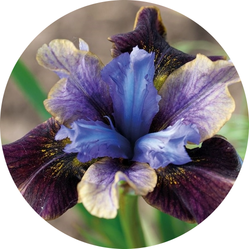

Black Joker Siberian Iris
Water: 1 inch per week.
>THis flower prefers moist feet, but likes to be dry on top. So it is best if the soil is moist at most times. Best to be grown with light shade and a lot of sunshine.